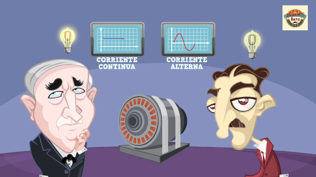

Historia de la Ingeniería en Electrónica
La historia de la Ingeniería en Electrónica se remonta a finales del siglo XIX, cuando se empezaron a realizar avances significativos en el estudio y aplicación de la electricidad y los circuitos eléctricos. A continuación, se presentan algunos hitos importantes en la historia de la Ingeniería en Electrónica:
1. Descubrimiento de la Electricidad: A lo largo del siglo XVIII, científicos como Benjamin Franklin y Alessandro Volta realizaron importantes descubrimientos relacionados con la electricidad, sentando las bases para el estudio de esta disciplina.
2. Desarrollo de la Teoría Electromagnética: En la década de 1860, James Clerk Maxwell formuló las ecuaciones que describen el comportamiento de los campos eléctricos y magnéticos, sentando las bases teóricas para el estudio de la electrónica.
3. Invención de la Válvula de Vacío: A principios del siglo XX, inventores como Thomas Edison y John Ambrose Fleming desarrollaron la válvula de vacío, un dispositivo electrónico que permitía controlar el flujo de corriente eléctrica en circuitos electrónicos.
4. Desarrollo de la Radio: En la primera mitad del siglo XX, inventores como Guglielmo Marconi y Nikola Tesla contribuyeron al desarrollo de la radio, una tecnología que revolucionó las comunicaciones a larga distancia.
5. Invención del Transistor: En 1947, los científicos John Bardeen, Walter Brattain y William Shockley inventaron el transistor en los laboratorios Bell, un dispositivo semiconductor que reemplazó a las válvulas de vacío y dio inicio a la era de la electrónica moderna.
6. Era de los Circuitos Integrados: En la década de 1960, se desarrollaron los primeros circuitos integrados, que permitieron integrar múltiples componentes electrónicos en un solo chip de silicio, dando lugar a la miniaturización y popularización de dispositivos electrónicos.
7. Avances en la Computación: A partir de la década de 1970, se produjeron importantes avances en el campo de la computación, con el desarrollo de microprocesadores y sistemas informáticos cada vez más potentes y compactos.
En la actualidad, la Ingeniería en Electrónica sigue evolucionando rápidamente, con avances en áreas como la inteligencia artificial, el internet de las cosas, la robótica y las energías renovables. Los ingenieros en electrónica continúan desempeñando un papel crucial en la innovación tecnológica y en el desarrollo de soluciones que impactan positivamente en nuestra sociedad.
